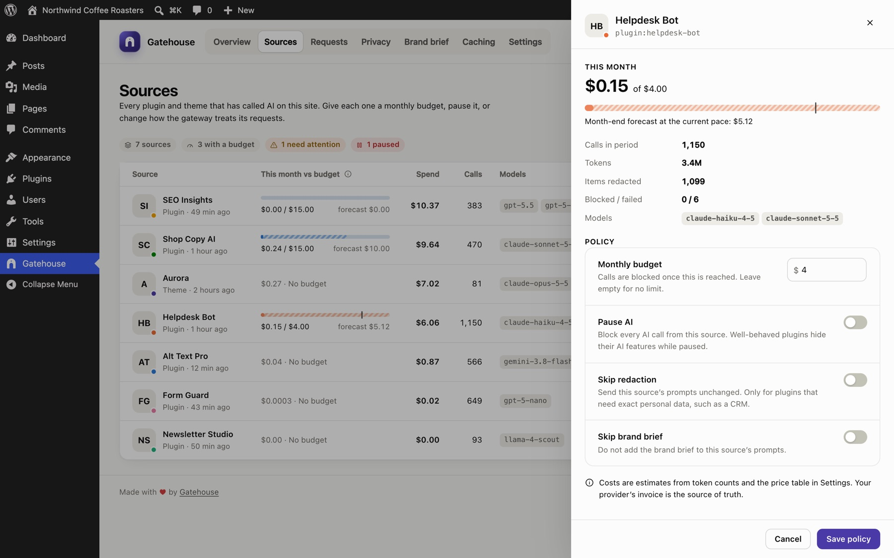
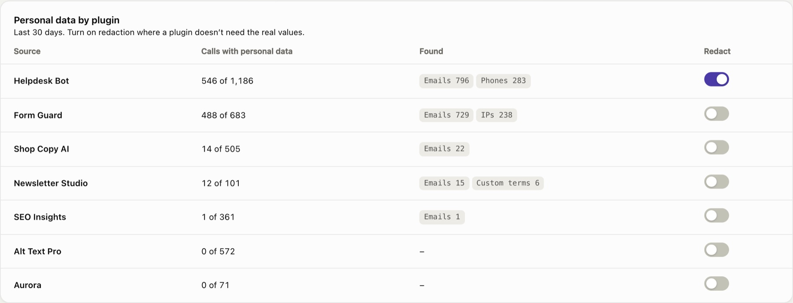
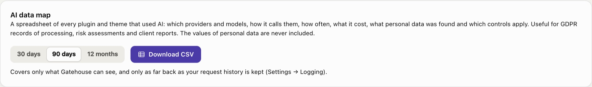
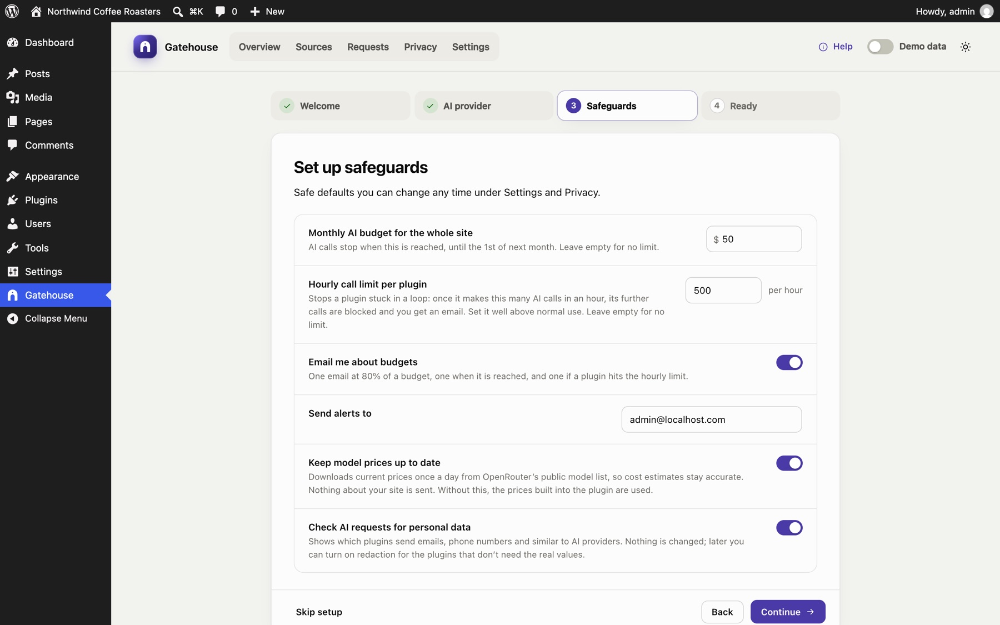
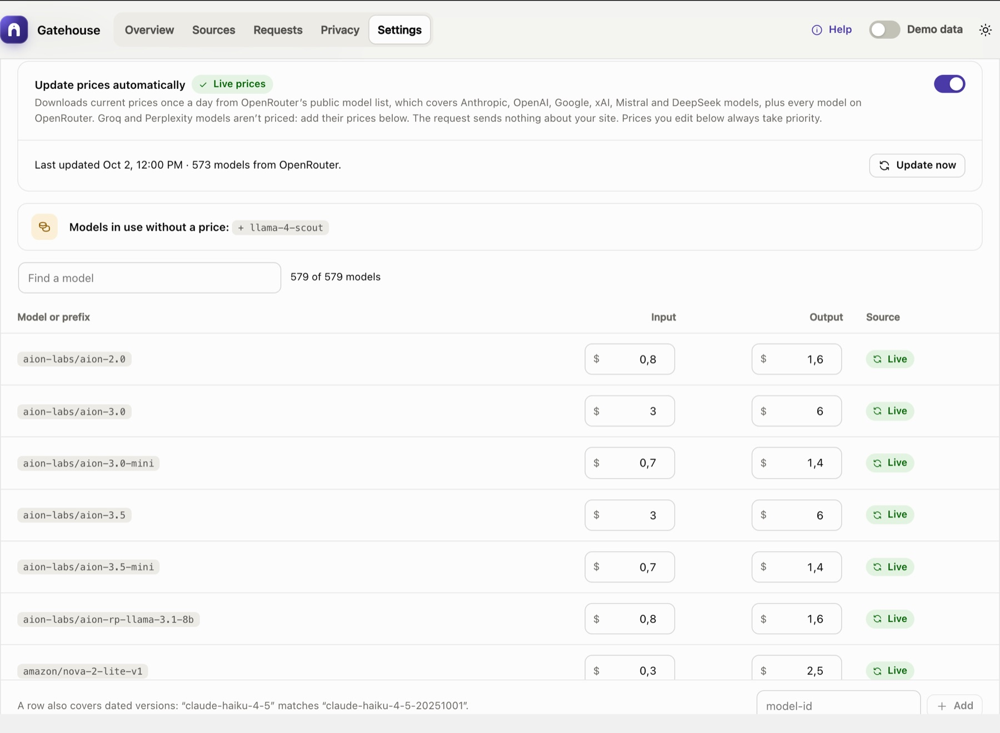

See what each plugin spends on AI. Cap it before it costs you.
Gatehouse shows the AI calls your plugins make and what each one costs. It stops spending with budgets and hourly limits, before anything is sent, and shows which plugins send personal data to AI providers. No setup in your other plugins.
Free and open source (GPL) · 184 KB · WordPress 7.0+ · PHP 7.4+ · Submitted to WordPress.org

One AI bill, many plugins, no limits
A chatbot, an SEO tool and an alt-text generator can all use your AI provider. Your provider sends one bill. WordPress has no spending cap per plugin.
A plugin stuck in a loop, or a wave of spam through a chatbot, keeps spending until someone notices the invoice.
Your provider bills a key, not a plugin. It can't tell you which plugin made which calls.
Emails, phone numbers and order details inside prompts go to a third-party AI provider, often without anyone noticing.
What Gatehouse can and can't see
Plainly, so you know before you install it.
It sees: the WordPress AI Client
Plugins and themes that use the AI Client built into WordPress 7.0, such as the official AI plugin.
It sees: plugins with their own key
Plugins that call Anthropic, OpenAI, Google, OpenRouter, xAI, Mistral, DeepSeek, Groq or Perplexity directly through WordPress, such as AI Engine.
It can't see: plugins' own AI services
Many SEO, page builder and form plugins send AI requests to their own servers. No WordPress plugin can see or price those calls.
Streamed answers (common for chatbots) are seen and can be blocked, but when the plugin reads the stream itself the token counts aren't available, so those calls have no cost. Hourly limits still count them.
Every call it sees goes through the gatehouse
Gatehouse runs on your own server, inside WordPress. It doesn't call AI itself and has no account or service.
A plugin asks for AI
For example, to write a product description or answer a customer.
Gatehouse checks
Works out which plugin is asking. Paused, over budget or over its hourly limit? The call stops here, before anything is charged.
LIMITSGatehouse looks
Records what kind of personal data the request contains. Replaces it only for plugins you've turned redaction on for.
PRIVACYThe provider answers
Anthropic, OpenAI, Google or another provider, as before.
Gatehouse records
Logs the plugin, model, tokens, estimated cost and timing, and puts back anything it replaced.
VISIBILITY
Everything is free
No paid version, no locked features, no account.
Know which plugin spends what
Every call Gatehouse sees is traced to the plugin or theme that made it, with its model, tokens, estimated cost and response time.
- Daily spend chart, model mix and activity heatmap
- A month-end forecast based on your last week
- A searchable log of every call, with the route it took and the personal data it contained

Budgets and hourly limits that block
Give each plugin a monthly budget and an hourly call limit. When one is reached, the next call is stopped before it's sent, so it costs nothing.
- Per-plugin and site-wide monthly budgets
- Hourly call limits against loops and spam waves
- Pause any plugin's AI with one switch
- Email alerts for budgets, limits and unusual activity

See which plugins send personal data
Gatehouse checks requests for emails, phone numbers, card numbers, IBANs, US SSNs and your own terms, and shows which plugins send them. It records the kind, never the values, and changes nothing.
- Turn on redaction per plugin: values become placeholders before the request leaves your site, and go back into the answer
- Off by default, because some plugins need the real data: a spam checker can't judge an email it can't see
- Pattern-based: it finds those formats, not every name or address

Download an AI data map
A spreadsheet of every plugin that used AI: its providers and models, how it calls them, volume, cost, the personal data found and the controls that apply. Useful for records of processing, risk assessments and client reports.

Two-minute setup guide
Opens on activation: a budget, an hourly limit, alerts, price updates and personal data checks.
Demo data
Explore with realistic sample data in a separate sandbox. Your real data is never touched.
Current model prices
Optional daily price download for Anthropic, OpenAI, Google, xAI, Mistral, DeepSeek and OpenRouter models. Your own prices always win.
Works with Connector Approval
Shows the calls blocked by the AI plugin's Connector Approval, and which plugins are waiting.
Help built in
Guides, FAQ, glossary and tooltips inside WordPress, plus this help center.
Light and dark
Matches your system, works on phones, and works with the keyboard and screen readers.
Screens from the current version
Click any screenshot to enlarge it.






Questions, answered
Which plugins does it work with?
Plugins that use the WordPress AI Client, and plugins that call Anthropic, OpenAI, Google, OpenRouter, xAI, Mistral, DeepSeek, Groq or Perplexity directly through WordPress, such as AI Engine. It can't see plugins that send AI requests to their own service, which many SEO, page builder and form plugins do. Details.
Does Gatehouse need its own API key or account?
No. Plugins keep using their own keys or the provider you connected to WordPress. There's no Gatehouse account or service.
What happens when a plugin reaches a limit?
Its next AI call is stopped before anything is sent. The plugin gets an error instead of an answer, and the call is logged as blocked. Budgets reset on the 1st of the month; hourly limits as soon as the last hour's count drops.
Are the costs exact?
They're estimates: the token counts your provider reports, multiplied by model prices. Discounts, taxes and plan fees aren't included, and streamed answers a plugin reads itself have no cost. Your provider's invoice is the source of truth. How costs are calculated.
Does Gatehouse change my plugins' requests?
Only if you turn on redaction for a plugin. Otherwise it just checks them and records what kind of personal data they contained.
Does Gatehouse send my data anywhere?
No. Its only optional outside request is a daily download of public model prices, which sends nothing about your site. Privacy details.
Is there a paid version?
No. Everything described here is in the free plugin.
Know what your AI plugins spend, and cap it
Install in a minute. The latest version is always on GitHub.